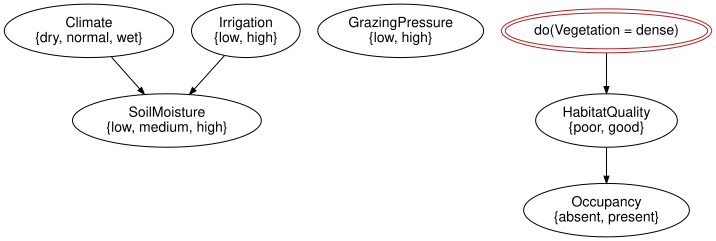
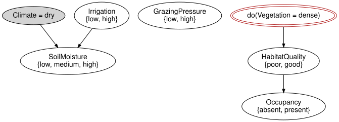

Observation versus intervention
Simon Frost
- Overview
- Setup
- A chain
- A fork
- What the intervention does to the network
- Downstream agreement needs a screening-off condition
- Soft interventions
- Provenance
- Summary
- References
Overview
Seeing that the vegetation is dense and forcing the vegetation to be dense are different operations with different consequences (Pearl 2009). observe records evidence and leaves the network untouched; do_intervention rewrites the network, replacing the mechanism of the intervened variable by a constant – the “cut” that string-diagram surgery performs on a causal model (Jacobs et al. 2019; Lorenz and Tull 2023). This vignette compares the two numerically on a chain and on a fork, then on the reference network, and reads the provenance of the rewrites from the model’s history.
Setup
using BayesianNetworksA chain
In the chain Rain → Sprinkler → Wet, observing the sprinkler tells us something about the rain (the sprinkler is turned on less on rainy days); switching it on by hand does not.
chain = bayesnet(:Rain => [:no, :yes], :Sprinkler => [:off, :on], :Wet => [:dry, :wet];
mechanisms = [:Sprinkler => :Rain, :Wet => :Sprinkler])
c = BayesModel(chain)
c = bind_cpt(c, [:Rain => [0.7, 0.3],
:Sprinkler => [0.5 0.5; 0.9 0.1], # rows = Rain
:Wet => [0.9 0.1; 0.2 0.8]]) # rows = Sprinkler
round.(marginal(c, :Rain).table; digits = 4)2-element Vector{Float64}:
0.7
0.3Observing the sprinkler on shifts the belief about the rain, because a sprinkler that is on is weak evidence for a dry day:
round.(marginal(observe(c, :Sprinkler => :on), :Rain).table; digits = 4)2-element Vector{Float64}:
0.9211
0.0789Switching the sprinkler on by hand changes nothing upstream: the rewritten network has no arrow into Sprinkler left for the information to travel back along.
round.(marginal(do_intervention(c, :Sprinkler => :on), :Rain).table; digits = 4)2-element Vector{Float64}:
0.7
0.3Downstream, the two agree: Wet depends on Sprinkler only through its own mechanism, which neither operation touches.
marginal(observe(c, :Sprinkler => :on), :Wet).table ≈
marginal(do_intervention(c, :Sprinkler => :on), :Wet).tabletrueA fork
In the fork Season → Rain and Season → Sprinkler, rain and sprinkler are dependent through the common cause. Observing rain changes the belief about the sprinkler; making it rain does not.
fork = bayesnet(:Season => [:dry, :wet], :Rain => [:no, :yes], :Sprinkler => [:off, :on];
mechanisms = [:Rain => :Season, :Sprinkler => :Season])
f = BayesModel(fork)
f = bind_cpt(f, [:Season => [0.5, 0.5],
:Rain => [0.9 0.1; 0.3 0.7], # rows = Season
:Sprinkler => [0.2 0.8; 0.8 0.2]]) # rows = Season
(marginal(f, :Sprinkler).table,
marginal(observe(f, :Rain => :yes), :Sprinkler).table,
marginal(do_intervention(f, :Rain => :yes), :Sprinkler).table)([0.5, 0.5], [0.725, 0.275], [0.5, 0.5])What the intervention does to the network
do_intervention is a local rewrite of the ACSet: the mechanism of the variable and its inputs are removed, and a mechanism with no inputs and a PointMassRef is added. Nothing else changes; the graph loses the incoming edges of the variable. The distribution of the rewritten network is therefore the truncated factorisation (Pearl 2009): the same product of conditional probability tables, with the factor for the intervened variable replaced by a point mass.
m = reference_habitat_model()
md = do_intervention(m, :Vegetation => :dense)
mechanism_names(syntax(md))7-element Vector{Symbol}:
:SoilMoisture_mechanism
:GrazingPressure_mechanism
:HabitatQuality_mechanism
:Occupancy_mechanism
:Climate_mechanism
:Irrigation_mechanism
Symbol("do[Vegetation=dense]")Symbol[variable_name(syntax(md), p) for p in parents(syntax(md), :Vegetation)]Symbol[]Vegetation has no parents left, and the drawing shows the two arrows that used to enter it are gone:
to_graphviz(md)
The point mass is materialised on demand as a kernel, so evaluation works as before:
kernel(md, :Vegetation).table3-element Vector{Float64}:
0.0
0.0
1.0Upstream of Vegetation, observation moves SoilMoisture and intervention does not; downstream, both give the same numbers.
mo = observe(m, :Vegetation => :dense)
(round.(marginal(m, :SoilMoisture).table; digits = 4),
round.(marginal(mo, :SoilMoisture).table; digits = 4),
round.(marginal(md, :SoilMoisture).table; digits = 4))([0.288, 0.403, 0.309], [0.0834, 0.35, 0.5666], [0.288, 0.403, 0.309])marginal(mo, :Occupancy) ≈ marginal(md, :Occupancy)trueEvidence lives in the wrapper, so a model can carry both: observe on an intervened model conditions the interventional distribution.
mdo = observe(md, :Climate => :dry)
evidence(mdo), intervened_variables(mdo)(Dict(:Climate => :dry), [:Vegetation])to_graphviz(mdo)
Downstream agreement needs a screening-off condition
The previous example does not establish that observation and intervention always agree downstream. An unobserved common cause can also affect a downstream target through a path that bypasses the manipulated variable:
confounded = bayesnet(:U => [:no, :yes], :X => [:no, :yes], :Y => [:no, :yes];
mechanisms = [:X => :U, :Y => (:U, :X)])
response = zeros(2, 2, 2)
for u in 1:2, x in 1:2
response[u, x, u == 2 && x == 2 ? 2 : 1] = 1.0
end
cm = bind_cpt(BayesModel(confounded),
[:U => [0.5, 0.5], :X => [1.0 0.0; 0.0 1.0], :Y => response])
(observed = marginal(observe(cm, :X => :yes), :Y).table,
intervened = marginal(do_intervention(cm, :X => :yes), :Y).table)(observed = [0.0, 1.0], intervened = [0.5, 0.5])Observing X=yes also reveals U=yes, giving P(Y=yes)=1. Setting X=yes does not reveal or change U, giving P(Y=yes)=0.5. The edge X -> Y is present in both models: being downstream does not remove confounding.
Soft interventions
A soft intervention replaces a mechanism by another one, with a chosen set of parents and a kernel supplied by the caller. Here GrazingPressure is made to depend on Climate (grazing is reduced in dry years):
k = cpt([axis(syntax(m), :Climate)], axis(syntax(m), :GrazingPressure),
[0.8 0.2; 0.5 0.5; 0.3 0.7]) # rows = Climate
ms = soft_intervention(m, :GrazingPressure => k)
variable_name.(Ref(syntax(ms)), parents(syntax(ms), :GrazingPressure))1-element Vector{Symbol}:
:Climateround.(marginal(m, :Vegetation).table; digits = 4), round.(marginal(ms, :Vegetation).table; digits = 4)([0.3611, 0.3798, 0.259], [0.3505, 0.3902, 0.2593])The result is validated: a soft intervention that would create a cycle is rejected.
try
soft_intervention(m, :Climate => NamedRef("k"); parents = [:Occupancy])
catch e
sprint(showerror, e)
end"CyclicBayesNetError: the variable graph is not acyclic; variables involved in or downstream of a cycle: Climate, SoilMoisture, Vegetation, HabitatQuality, Occupancy (ids 1, 3, 5, 6, 7)"Provenance
Every rewrite is recorded in the model’s history as a ModelEvent with the mechanism that was removed and the one that was added, so an intervened model explains itself.
m2 = soft_intervention(md, :GrazingPressure => k; note = "reduced grazing in dry years")
for e in history(m2)
println(e.kind, " on ", e.target)
println(" removed: ", e.removed)
println(" added: ", e.added)
isempty(e.note) || println(" note: ", e.note)
endhard on Vegetation
removed: MechanismRecord(:Vegetation_mechanism, NamedRef("Vegetation_mechanism"), [:SoilMoisture, :GrazingPressure])
added: MechanismRecord(Symbol("do[Vegetation=dense]"), PointMassRef(:dense), Symbol[])
soft on GrazingPressure
removed: MechanismRecord(:GrazingPressure_mechanism, NamedRef("GrazingPressure_mechanism"), Symbol[])
added: MechanismRecord(Symbol("soft[GrazingPressure]"), NamedRef("soft[GrazingPressure]"), [:Climate])
note: reduced grazing in dry yearsintervened_variables(m2), is_intervened(m2, :Vegetation), is_intervened(m2, :Occupancy)([:Vegetation, :GrazingPressure], true, false)The events are part of the JSON written by json_model, so the provenance travels with the model (see the serialisation vignette).
Summary
Observation is a fact about the semantics and leaves the syntax alone; intervention is an edit of the syntax, deleting one mechanism and putting a constant in its place, so their downstream answers agree only when the relevant screening-off/no-confounding conditions hold, and can otherwise differ there as well as upstream. Soft interventions replace a mechanism by another one rather than by a constant, and every rewrite is recorded in the model’s history, so an intervened model can say what was done to it. The next vignette, Serialisation, provenance and CatColab export, writes these models to files and reads them back. Taking networks apart instead of editing them in place is the subject of CategoricalBayesianNetworks.jl’s open-networks vignette.
References
Jacobs, Bart, Aleks Kissinger, and Fabio Zanasi. 2019. “Causal Inference by String Diagram Surgery.” Foundations of Software Science and Computation Structures (FoSSaCS 2019), Lecture notes in computer science, vol. 11425: 313–29. https://doi.org/10.1007/978-3-030-17127-8_18.
Lorenz, Robin, and Sean Tull. 2023. Causal Models in String Diagrams. https://arxiv.org/abs/2304.07638.
Pearl, Judea. 2009. Causality: Models, Reasoning, and Inference. 2nd ed. Cambridge University Press. https://doi.org/10.1017/CBO9780511803161.